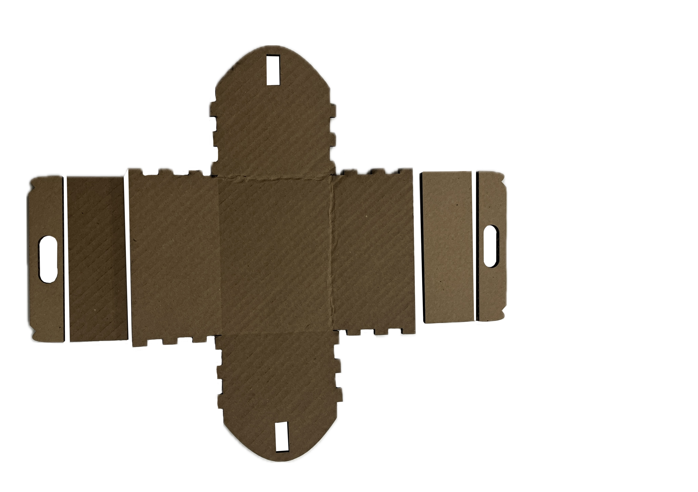
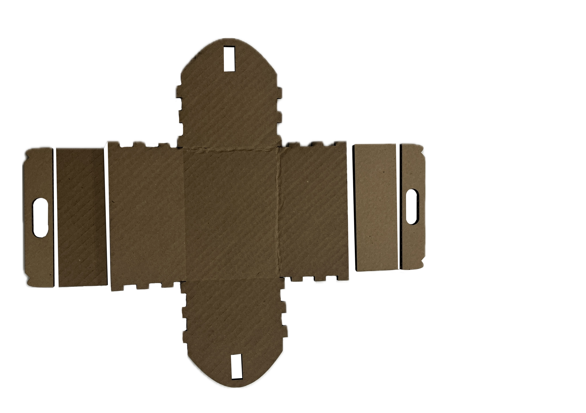

Week 2: 2D Design & Cutting
Assignment 1: My Takeaway Box
I wanted to design a box that is easy to carry, so I focused on adding a handle as a key feature. To find inspiration, I looked into everyday objects that are both functional and portable. The takeaway box stood out to me for its simple yet clever structure. Inspired by its form and convenience, I developed my own version of a box with a built-in handle
First Experiment
Process

Process
However, during the design process, I made a critical mistake: I didn't account for the thickness of the cardboard I would be using. As a result, when I attempted to laser cut my design for the first time, I realized that the box I had created was too large to fit on the laser cutter bed. I had to scale down the entire design and revise the unit dimensions accordingly. (Many thanks to Alyssa for helping me troubleshoot.) This experience taught me the importance of checking both material specifications and machine constraints before finalizing a design. It was a valuable lesson in planning ahead and staying adaptable throughout the prototyping process.
Adjustment
 

Final Outcome
Assignment 2: Fusion 360 Tutorial
To build up my skills, I followed a Lego tutorial on YouTube: https://youtu.be/d3qGQ2utl2A?si=fJoPCjs-vjcQkw8e , which guided me through several basic functions in Fusion 360, including 2D Sketch, Extrude, Hollow, and Rectangular Pattern. This practice helped me become more familiar with the software's interface and core tools.


Assignment 3: Fusion Modeling
I chose the motor and gear as the objects to focus on, since they are very likely to be used in my final project. As first step, I measured their dimensions to ensure accuracy.